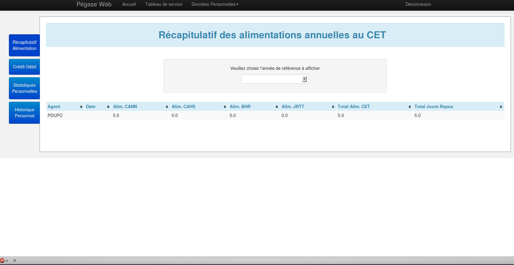
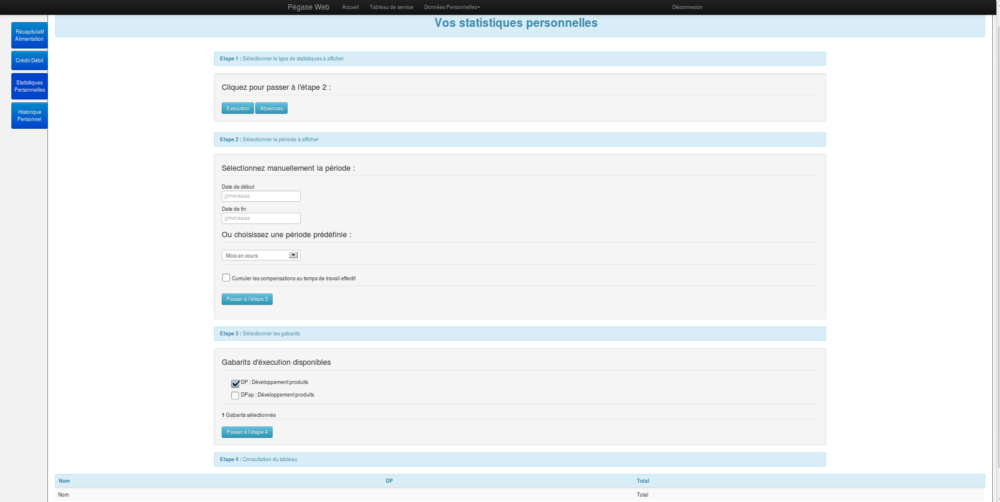
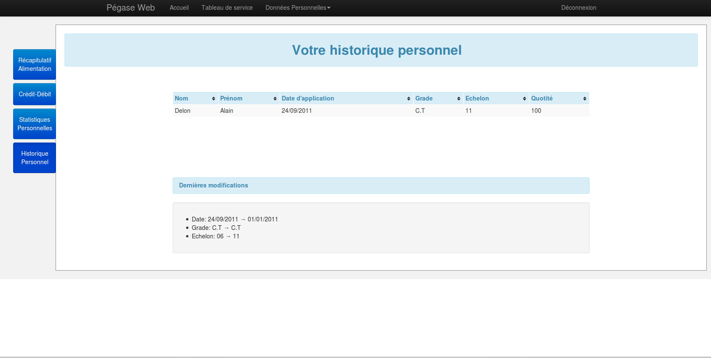

Cette page comporte 4 onglets, qui seront présentés séparément.
Récapitulatif Alimentation

- Onglets - permet de naviguer parmes les différentes données personnelles
- Choix de l'année pour laquelle votre récapitulatif sera affiché
- Récapitulatif de vos différentes alimentations CET
Crédit - Débit
A compléter par MétéoFrance
Statistiques Personnelles

- Onglets - permet de naviguer parmes les différentes données personnelles
- Sélectionnez Exécution ou Absences selon les statistiques que vous souhaitez
- Sélectionnez la période sur laquelle vous souhaitez obtenir des données
- Sélectionnez les gabarits sur lesquels vous souhaitez obtenir des données
- Les données sont présentées dans le tableau
Récapitulatif Alimentation

Présente l'état actuel de votre carrière, ainsi que sa dernière évolution en date.